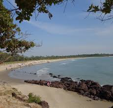

Casamance
Fun facts about Casamance!
Casamance, a lush region in southern Senegal, is renowned for its vibrant culture, rich cuisine, and breathtaking natural beauty. Separated from the rest of the country by The Gambia, this area is a tapestry of dense mangroves, sprawling rice fields, and picturesque beaches along the Atlantic coastline. The region is home to the Jola people, whose vibrant traditions include intricate music and dance performances, often accompanied by the rhythmic beats of drums. Casamance is famous for its flavorful cuisine, with dishes like yassa poulet (chicken marinated in lemon and onions) and fresh seafood caught from its abundant waters. Visitors can also explore the bustling markets, where vibrant fabrics, handcrafted art, and local produce offer a glimpse into the community’s everyday life. Whether kayaking through its serene rivers, enjoying the hospitality of its people, or partaking in colorful festivals, Casamance offers a unique and unforgettable experience.
